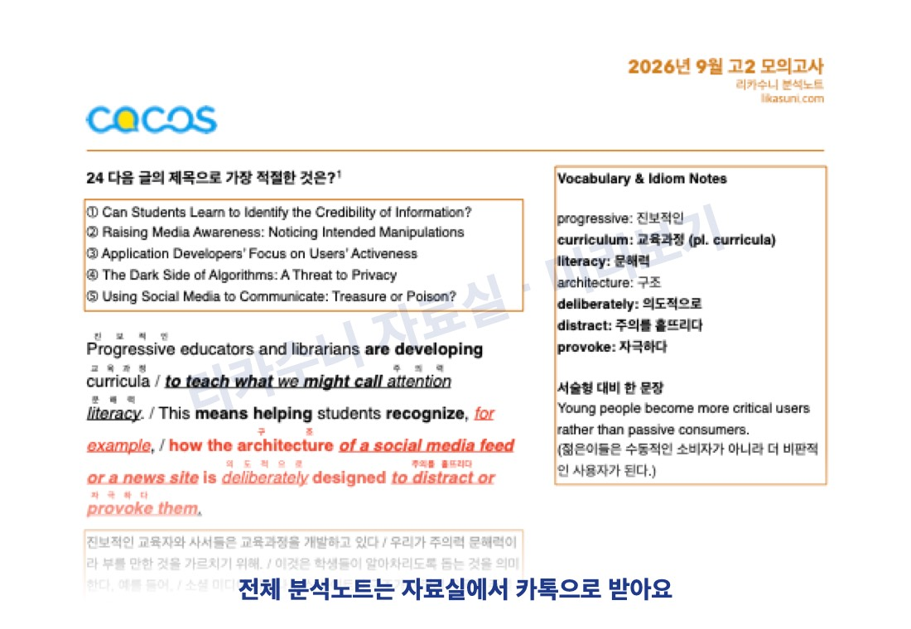

안녕하세요, 이매동 코코스학원 리카수니 원장입니다.
학생 요청으로 2026년 9월 고2 영어 모의고사 24번 분석노트를 만들었어요.
시험지를 옆에 펴 놓고 보시면 더 잘 보여요.
· 시험: 2026년 9월 고2 전국연합학력평가 영어
· 번호: 24번 (글의 제목)
· 정답: ② Raising Media Awareness: Noticing Intended Manipulations
(미디어 인식 높이기: 의도된 조작 알아차리기)
진보적인 교육자와 사서들이 '주의력 문해력(attention literacy)'을 가르치는 교육과정을 만들고 있다는 글이에요.
소셜 미디어 피드나 뉴스 사이트가 학생들의 주의를 흩뜨리거나 자극하도록 '의도적으로' 설계되어 있다는 걸 알아차리게 돕는 교육이에요.
둘째 문장 This means helping students recognize ~ 부분이 핵심이에요.
deliberately designed to distract or provoke them
→ '의도적으로 설계된 구조를 알아차리게 하는 교육'이 곧 ②의 Noticing Intended Manipulations 와 연결돼요.
① 정보의 '신뢰성' 판별 → 글의 초점은 진짜·가짜 판별이 아니라 '설계된 주의 끌기'예요.
③ 앱 개발자의 관점 → 글의 주체는 교육자와 사서예요.
④ 알고리즘과 사생활 위협 → 사생활 이야기는 핵심이 아니에요.
⑤ 소통 도구로서의 장단점 → 글이 다루는 내용이 아니에요.

1) what we might call attention literacy
→ 관계대명사 what: '우리가 주의력 문해력이라 부를 만한 것'
2) helping students recognize ~
→ help + 목적어 + 동사원형
3) how the architecture of a social media feed ~ is deliberately designed ~
→ 간접의문문(의문사 + 주어 + 동사)
· progressive 진보적인
· curriculum 교육과정 (복수 curricula)
· literacy 문해력
· architecture 구조
· deliberately 의도적으로
· distract 주의를 흩뜨리다
· provoke 자극하다
Young people become more critical users rather than passive consumers.
(젊은이들은 수동적인 소비자가 아니라 더 비판적인 사용자가 된다.)
→ A rather than B (B라기보다는 A) 구조로 영작 문제에 자주 나와요.
끊어 읽기·해석·구문이 모두 정리된 PDF 는 리카수니 자료실에서 카카오 로그인 후 카톡으로 받을 수 있어요.
같은 회차 다른 번호도 요청할 수 있어요.
▶ 2026년 9월 고2 영어 자료 보기
https://data.likasuni.com/moe/go2/2026-09/eng/
분당 이매동 코코스학원은 초등·중등·고등 영어와 수학을 가르쳐요.
모의고사·내신 대비가 궁금하시면 편하게 문의해 주세요.
· 홈페이지: https://www.cocosedu.co.kr/
· 주소: 경기 성남시 분당구 판교로 476 2층